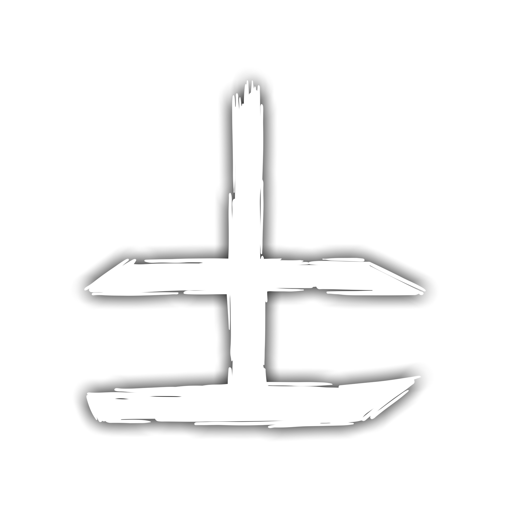
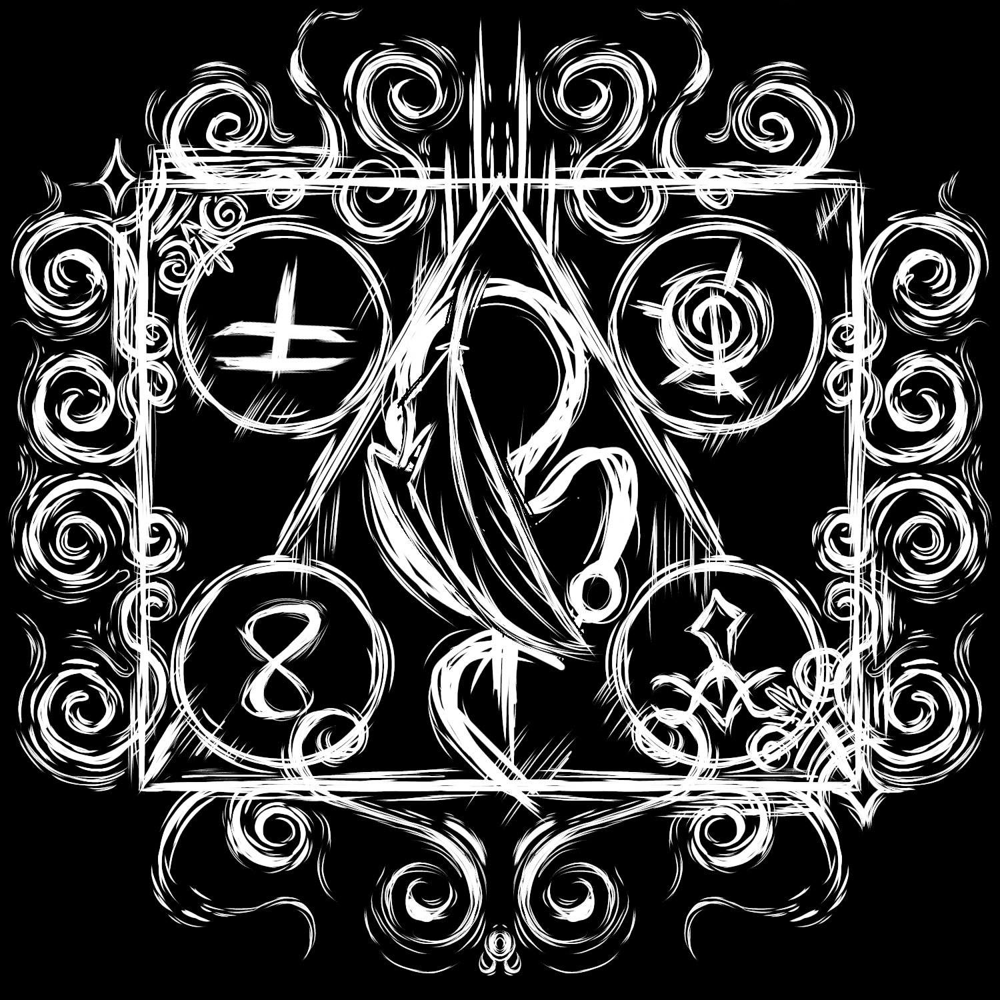
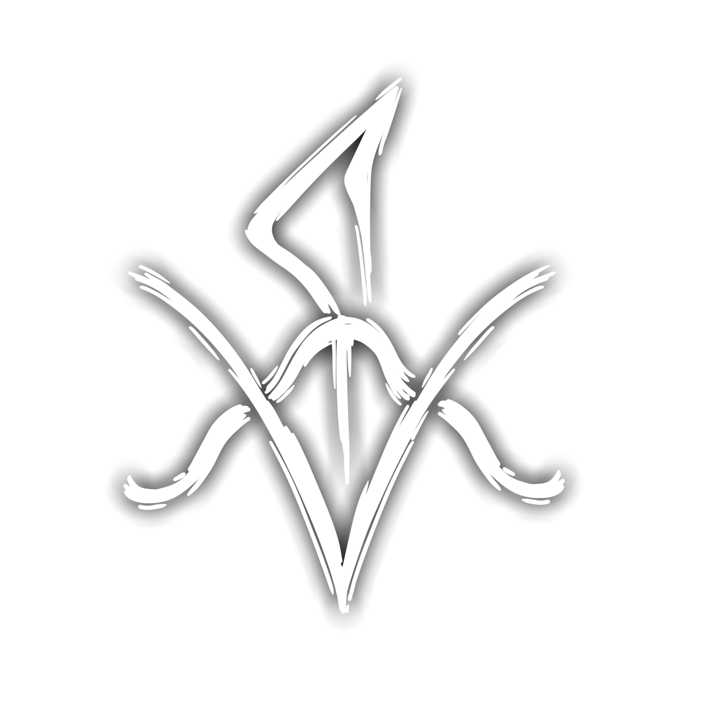

Tudo começa pelo Sangue, a entidade dos sentimentos: amor, paixão, obsessão. Tais sentimentos que no começo podem surgir de maneira leve mas que se tornaram muito intensos na minha vida em relação a você. Algo que eu jamais senti por alguém com tanta intensidade, a maneira como o sangue banha o fluxo do outro lado e o amor que eu sinto por você percorre todo o meu corpo é de fato fascinante. O mais puro sentimento de paixão é obsessão que me faz querer você mais e mais todos os dias, querendo torná-la minha e somente minha.

O caos é inevitável, e a imprevisibilidade dos acontecimentos na nossa relação que torna tudo mais interessante. A energia inesgotável eletriza a nossa vida trazendo dos mais diversos ocorridos e cenários, os momentos em que passamos e o seu jeito imprevisível é algo que me anima e diverte sempre. Do seu lado não existe momento ruim que não possa virar um sorriso ou risada, eu encontro minha felicidade todos os dias em você.

Saber tudo é perder tudo, e o maior conhecimento que eu possuo é todas as inúmeras qualidades que você tem. Conhecer uma pessoa tão maravilhosa assim é um imenso privilégio, e eu adoro saber mais sobre você, os seus gostos e as suas histórias.